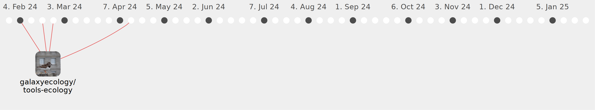

Galaxy Community Activities
jeremyfix
jeremyfix
https://github.com/jeremyfix
Commits all-time:
37
Commits last year:
21

galaxyecology/tools-ecology
(21)
659b734
6233d51
d7f4d03
b13e1fa
b807bbb
831be31
6ce2ea4
73240cc
da91fe2
c7c5696
c411ff2
b13c076
3cf32f7
7b61a9c
bc1ab13
527a748
c8dcded
f4a81c1
02913d0
4e7e58b
388c2a6